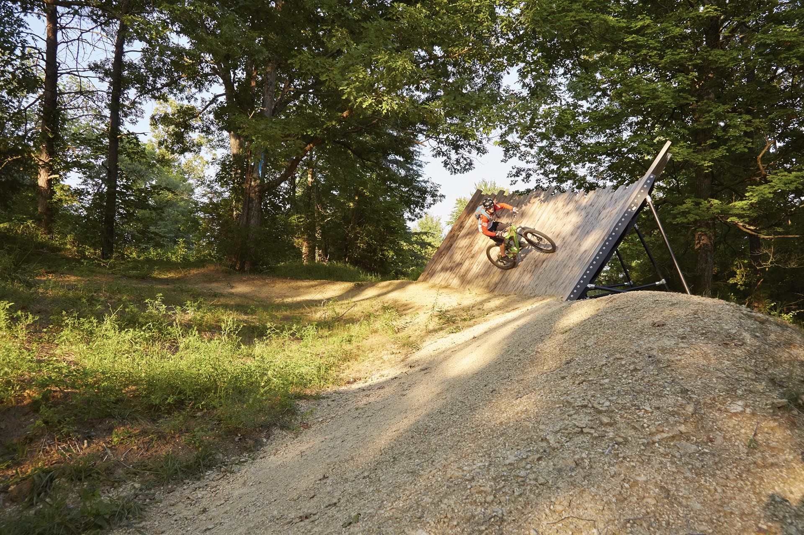

As stewards entrusted to preserve native meadows, riparian forests, and other wildlife habitats, The Parklands also provides walking paths and canoe launches and recreational fields for all of Louisville’s citizens. People want to live in and move to cities with open, pastoral space that they can escape to for healing and balance, and where they can exercise and stay active outdoors.
IT’S GO TIME.

Learning
Where nurture meets nature.
The purpose of our Outdoor Classroom is to teach STEAM (science, technology, engineering, arts, and math) and natural history through hands-on discoveries outdoors that stimulate curiosity for children, adults, and families — all resulting in the enhancement of scientific literacy in our community. We envision a future in which all people view themselves as lifelong learners and share a connection to the natural world.

Paddling
Take me to the river.
Winding through upland meadows and farm fields and bottomland forests, Floyds Fork empties into the Salt River, which flows another 25 miles until it drains into the Ohio River. Located along Floyds Fork between Shelbyville Road and Bardstown Road, The Parklands offers some of the best paddling access in the area.

Fishing
The original live-streaming.
Venture down into the thickets of undergrowth along the creek. Listen to the lisp and lapse of the current. Wade into the stream, and cast your line out into the channel. Throughout The Parklands, you can find ponds, lakes, fishing piers, and the unifying artery of Floyds Fork stocked with game fish and available for picnics and wildlife watching year-round.
Tail Wagging
Experience life unleashed.
An off-leash dog park adjacent to the Egg Lawn, the Barklands is open to members of the Louisville Dog Run Association and divided into three one-acre zones — one zone for large dogs, one zone for smaller dogs, and one zone designated as “resting” (or closed for use). The runs rotate to maintain the turf, and the signage identifies which areas are open.

Biking
Move in all the best circles.
Some bikers prefer a paved road. Others prefer a dirt trail. Either way, The Parklands has you covered. Outside of the bike park, hikers and walkers share all of our bike-accessible trails, so always pass on the left and alert those who you’re moving around. Choose your route based on the trail usage, the distance, and the difficulty level, and then get rolling.

Walking
Wonder while you wander.
Running, walking, and hiking are some of the most accessible activities you can do to improve your health and roam throughout The Parklands. Whether you’re into high-intensity training or a sightseeing stroll, prefer packed dirt or stone slabs underfoot, have the energy to take on one or 10 miles — we can show you the way.

Picnicking
Make a meal of it.
Feast in the open air. Watch butterflies fluttering from coneflower to coneflower. Each of our parks has its own designated picnic areas located at limestone gorges, lakeside overlooks, or sunlit hillsides. No matter what type of picnic you’re planning, we’ve got the spot for you.
Gardening
The plot thickens.
Sunflowers standing 10 feet tall at their midsummer peak. The scent of tomato vines rubbed between your fingers. Raised beds overflowing with lettuce and eggplant cages and cucumber trellises. Community gardens alleviate stress and knit together neighborhoods — and they cut down on our carbon footprints.
Playing
The ultimate playdate.
We opened the Marshall Playground and Sprayground in Beckley Creek Park in 2011 — our first amenity available to the public. Today, we offer the Cliffside Playground and Sprayground in Broad Run Park, as well as the Pope Lick Park playground near John Floyds Fields. Come out and make a splash.
Competing
Be a good sport.
Get competitive on one of our sports fields — the Egg Lawn, the Greensward, the Cliffside Center, the John Floyds Fields, or the fields in the Humana Grand Allee. These spaces are fun for all ages and perfect for tackling in a friendly football game, dribbling a field hockey ball, throwing around a Frisbee, facing off in lacrosse, or kicking a soccer ball. So grab some friends and come out and play.
Sightseeing
Start here. Or here. Or here.
For millennia, animals and humans have shaped the landscapes that make up The Parklands. We’ve identified dozens of places to sightsee throughout the parks and highlighted our favorite ones here. Next time you visit, stop and observe all the nuances within the flora, fauna, history, and culture of our area.


Maps + Directions
Get on the beaten track.
Our park system is nearly five times as large as New York’s Central Park, so you may need some help finding your way around. Chart your course with our interactive map.